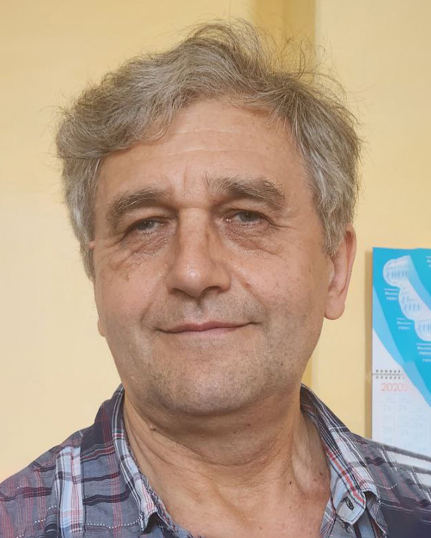

Стукалов Сегій Анатолійович
старший викладач
Основні публікації:
У наукових виданнях, включених до переліку наукових фахових видань України:
- Михайленко В.С., Камєнєва А.В., Стукалов С.А., Зуй О.М Моделювання нейромережевої системи ідентифікації та керування параметрами технічного об’єкта // Системні технології. Регіональний міжвузівський збірник наукових праць. – Випуск 3 (146). - Дніпро, 2023. – С.10-22.
- Михайленко В.С., Шевченко Т.І., Стукалов С.А., Зуй О.М., Мартинович Л.Я. Нечітка експертна система для керування температурою повітря у приміщеннях торговельно-розважального центру // Збірник наукових праць Військового інституту Київського національного університету імені Тараса Шевченка. К.: ВІКНУ, 2023. № 79, 2023. – С.128-139.
- Vitaliy Mezhuyev, Vladyslav Mykhailenko, Larysa Martynovych, Hanna Korenkova, Valerii Leshchenko, Sergii Stukalov Intellectual Improvement of the Control System for Harmful Emissions of a Ship's Utilizing Boiler/ Proceedings of the 11-th International Conference "Information Control Systems & Technologies" Odesa, Ukraine, September 21–23, 2023. –С.153-162.
Тези доповідей:
- Коренкова Г. В., Зуй О. М., Стукалов С. А. Моделювання квантового алгоритму Гровера/ Інформаційні технології та інженерія : Всеукраїнська науково-практична конференція молодих вчених, аспірантів і студентів : тези доп., 7–10 лютого 2023 р. / ЧНУ імені Петра Могили. Миколаїв, 2023. С.21.
- Коваленко І. О., Шаріпова І. В., Левченко А. О., Стукалов С. А. Генерація тестових даних за допомогою мікроконтролерів, задля тестування системи «розумний» будинок // Інформаційні технології та інженерія . Всеукраїнська науково-практична конференція молодих вчених, аспірантів і студентів . 7–10 лютого 2023 р. / ЧНУ імені Петра Могили. – Миколаїв, 2023. – С. 72-73
- Зуй О. М., Коренкова Г. В., Стукалов С. А. Особливості використання графічного редактору FIGMA у навчальному процесі / Інформаційні технології та інженерія : Всеукраїнська науково-практична конференція молодих вчених, аспірантів і студентів : тези доп., 7–10 лютого 2023 р. / ЧНУ імені Петра Могили. Миколаїв, 2023. С.127.
- Гунченко Ю.О., Пасенченко Т.О., Стукалов С.А., Зуй О.М. Візуальна одночасна локалізації та картографування для мобільних пристроїв. Тези доповідей XІХ Міжнародної науково-практичної конференції "Військова освіта і наука: сьогодення та майбутнє", Військовий інститут Київського національного університету імені Тараса Шевченка, м. Київ, 10 листопада 2023. –С.32.
- Михайленко В.С., Чепок А.О., Стукалов С.А. Аналіз роботи програми Orange на прикладі кластеризації даних методом k-середніх. Тези доповідей XІХ Міжнародної науково-практичної конференції "Військова освіта і наука: сьогодення та майбутнє", Військовий інститут Київського національного університету імені Тараса Шевченка, м. Київ, 10 листопада 2023. –С.50.
Дисципліни, що викладає:
- Теорія автоматичного керування Робоча програма; Силабус
- Системи автоматизованого проектування систем автоматизації Робоча програма; Силабус
- Комп'ютерні системи Робоча програма; Силабус
- Комп'ютерні мережі Робоча програма; Силабус
- Сучасні мережеві технології, протоколи і стандарти Робоча програма; Силабус